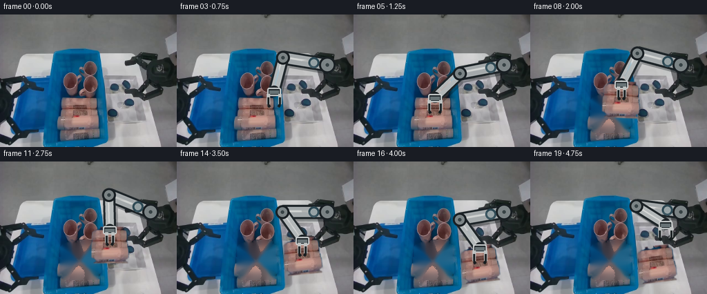
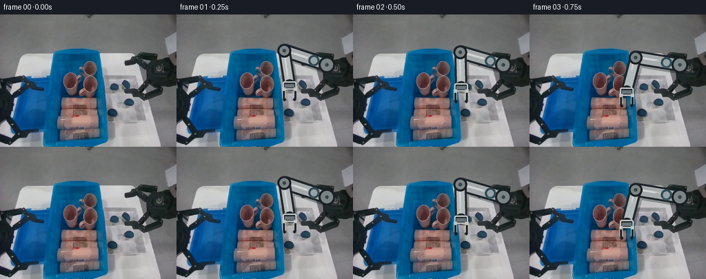
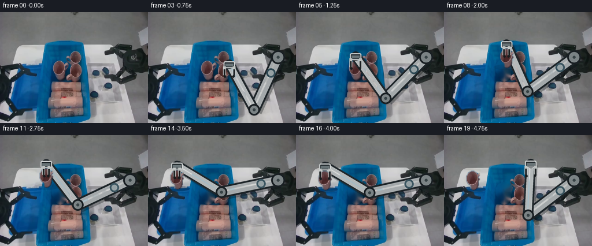
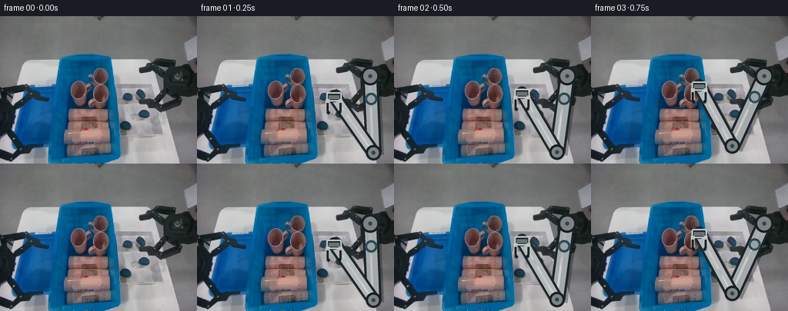

CODING AGENTS AS PIXEL WORLD MODELS
traex/GPT-5.6-Sol · common50_0003
点击播放 · 原生 RGB 像素
逐轮保存的候选
回放视频、检查图与代码变化。
每份候选均可单独播放。实际图片检查记录在下方工具轨迹中。
候选 01播放与检查图
点击播放 · 原生 RGB 像素


展开代码变化
--- 上一保存版本
+++ 本次保存版本
@@ -0,0 +1,263 @@
+from pathlib import Path
+import math
+import numpy as np
+import cv2
+from PIL import Image, ImageDraw
+import artifact_io
+
+CASE_DIR = Path(__file__).resolve().parent
+W, H = 256, 192
+SS = 4
+
+
+def smoothstep(t):
+ t = float(np.clip(t, 0.0, 1.0))
+ return t * t * (3.0 - 2.0 * t)
+
+
+def mix(a, b, t):
+ t = smoothstep(t)
+ a, b = np.asarray(a, np.float32), np.asarray(b, np.float32)
+ return tuple(a * (1.0-t) + b * t)
+
+
+def rgba_overlay(rgb, rgba):
+ """Alpha-composite a PIL RGBA layer on a uint8 RGB frame."""
+ fg = np.asarray(rgba, dtype=np.float32)
+ a = fg[..., 3:4] / 255.0
+ return np.clip(np.asarray(rgb, np.float32) * (1-a) + fg[..., :3] * a,
+ 0, 255).astype(np.uint8)
+
+
+def antialias_layer(draw_fn):
+ layer = Image.new('RGBA', (W*SS, H*SS), (0, 0, 0, 0))
+ d = ImageDraw.Draw(layer)
+ draw_fn(d, SS)
+ return layer.resize((W, H), Image.Resampling.LANCZOS)
+
+
+def line(draw, points, fill, width):
+ draw.line([(int(x), int(y)) for x, y in points], fill=fill,
+ width=max(1, int(width)), joint='curve')
+
+
+def ellipse(draw, box, fill, outline=None, width=1):
+ box = tuple(int(v) for v in box)
+ draw.ellipse(box, fill=fill, outline=outline, width=max(1, int(width)))
+
+
+def robot_geometry(wrist):
+ """Two-link rigid IK. The right-image arm is the robot's left arm."""
+ shoulder = np.array((218.0, 73.0), np.float32)
+ p = np.array(wrist, np.float32)
+ v = p - shoulder
+ dist = float(np.linalg.norm(v))
+ L1, L2 = 65.0, 50.0
+ dist = min(max(dist, abs(L1-L2)+0.01), L1+L2-0.01)
+ u = v / (np.linalg.norm(v) + 1e-8)
+ a = (L1*L1 - L2*L2 + dist*dist) / (2*dist)
+ hh = math.sqrt(max(0.0, L1*L1 - a*a))
+ q = shoulder + a*u
+ # Up/left elbow branch remains continuous through the whole maneuver.
+ perp = np.array((-u[1], u[0]), np.float32)
+ e1, e2 = q + hh*perp, q - hh*perp
+ elbow = e1 if e1[0] < e2[0] else e2
+ return shoulder, elbow, p
+
+
+def render_arm(frame, wrist, opening, carrying=False):
+ shoulder, elbow, hand = robot_geometry(wrist)
+
+ def arm_layer(d, s):
+ S, E, P = shoulder*s, elbow*s, hand*s
+ # Soft contact shadow grounds the moving mechanism while preserving the fixed camera.
+ off = np.array((2.5, 3.0))*s
+ line(d, [S+off, E+off], (7, 13, 17, 80), 22*s)
+ line(d, [E+off, P+off], (7, 13, 17, 70), 19*s)
+ # Black structural edges, then rigid anodized-metal links.
+ line(d, [S, E], (28, 35, 39, 255), 21*s)
+ line(d, [S, E], (164, 169, 171, 255), 15*s)
+ line(d, [S-np.array((1,1))*s, E-np.array((1,1))*s],
+ (211, 214, 213, 205), 3*s)
+ line(d, [E, P], (31, 38, 42, 255), 18*s)
+ line(d, [E, P], (179, 184, 185, 255), 12*s)
+ line(d, [E-np.array((1,1))*s, P-np.array((1,1))*s],
+ (220, 222, 220, 190), 2*s)
+ # Stable revolute joints and shoulder collar.
+ for C, r in ((S, 12), (E, 10), (P, 8)):
+ ellipse(d, (C[0]-r*s, C[1]-r*s, C[0]+r*s, C[1]+r*s),
+ (25, 31, 35, 255))
+ ellipse(d, (C[0]-(r-3)*s, C[1]-(r-3)*s,
+ C[0]+(r-3)*s, C[1]+(r-3)*s),
+ (123, 131, 133, 255))
+ ellipse(d, (C[0]-2.5*s, C[1]-2.5*s,
+ C[0]+2.5*s, C[1]+2.5*s), (55, 66, 69, 255))
+ # Blue identification band marks this as the left manipulator.
+ q1 = shoulder*.70 + elbow*.30
+ ellipse(d, ((q1[0]-8)*s, (q1[1]-8)*s, (q1[0]+8)*s, (q1[1]+8)*s),
+ (47, 75, 88, 230))
+ ellipse(d, ((q1[0]-5)*s, (q1[1]-5)*s, (q1[0]+5)*s, (q1[1]+5)*s),
+ (150, 162, 165, 255))
+ return rgba_overlay(frame, antialias_layer(arm_layer))
+
+
+def render_gripper(frame, wrist, opening):
+ # The gripper stays vertical so the carried soft item itself is never deformed.
+ x, y = wrist
+ gap = 4.2 + 4.2*opening
+ def grip_layer(d, s):
+ # Rectangular palm and two parallel, mechanically rigid jaws.
+ d.rounded_rectangle(((x-10)*s, (y-5)*s, (x+10)*s, (y+7)*s),
+ radius=3*s, fill=(32, 39, 43, 255),
+ outline=(197, 201, 201, 255), width=2*s)
+ d.rectangle(((x-7)*s, (y-1)*s, (x+7)*s, (y+4)*s),
+ fill=(104, 115, 118, 255))
+ for side in (-1, 1):
+ fx = x + side*gap
+ # silver carriage, black rubber jaw and inward-facing tip
+ line(d, [(fx*s, (y+4)*s), (fx*s, (y+19)*s)],
+ (190, 194, 193, 255), 5*s)
+ line(d, [(fx*s, (y+9)*s), (fx*s, (y+20)*s)],
+ (30, 35, 37, 255), 3*s)
+ tipx = x + side*(gap-2.2)
+ line(d, [(fx*s, (y+20)*s), (tipx*s, (y+23)*s)],
+ (22, 27, 29, 255), 4*s)
+ return rgba_overlay(frame, antialias_layer(grip_layer))
+
+
+def make_object(first):
+ """Extract the warm red laundry item in the dark-blue bin as one rigid sprite."""
+ yy, xx = np.mgrid[:H, :W]
+ r, g, b = [first[..., i].astype(np.int16) for i in range(3)]
+ region = (xx >= 89) & (xx <= 143) & (yy >= 116) & (yy <= 168)
+ warm = (r > 58) & (r > g + 10) & (r > b + 6)
+ # Include neutral highlights/shadows enclosed by folds, but never the blue bin.
+ raw = (region & warm).astype(np.uint8) * 255
+ raw = cv2.morphologyEx(raw, cv2.MORPH_CLOSE,
+ cv2.getStructuringElement(cv2.MORPH_ELLIPSE, (7, 7)))
+ n, labels, stats, _ = cv2.connectedComponentsWithStats((raw > 0).astype(np.uint8), 8)
+ mask = np.zeros((H, W), np.uint8)
+ for i in range(1, n):
+ if stats[i, cv2.CC_STAT_AREA] >= 18:
+ mask[labels == i] = 255
+ mask = cv2.dilate(mask, cv2.getStructuringElement(cv2.MORPH_ELLIPSE, (3, 3)))
+ # Limit extraction to the lower item; upper warm patches are separate bin contents.
+ mask[(yy < 116) | (yy > 168) | (xx < 89) | (xx > 143)] = 0
+ # Feather only the silhouette edge for natural antialiasing.
+ alpha = cv2.GaussianBlur(mask, (0, 0), .7)
+ ys, xs = np.where(mask > 0)
+ center = np.array((float(xs.mean()), float(ys.mean())), np.float32)
+
+ # Clean plate after pickup: expand the exact silhouette and inpaint from blue bin fabric.
+ hole = cv2.dilate(mask, cv2.getStructuringElement(cv2.MORPH_ELLIPSE, (7, 7)))
+ clean = cv2.inpaint(first, hole, 7, cv2.INPAINT_TELEA)
+ # Ensure the filled pixels retain the bin's blue cast rather than warm edge leakage.
+ hmask = hole > 0
+ rr = clean[..., 0].astype(np.float32)
+ gg = clean[..., 1].astype(np.float32)
+ bb = clean[..., 2].astype(np.float32)
+ bad = hmask & ((rr > gg + 18) | (rr > bb + 10))
+ if bad.any():
+ blue_sample = cv2.GaussianBlur(first, (0,0), 5.0)
+ clean[bad] = blue_sample[bad]
+ rgba = np.dstack((first, alpha))
+ return rgba, center, clean, hole
+
+
+def render_shadow(frame, center, strength=0.5):
+ x, y = center
+ def sh(d, s):
+ d.ellipse(((x-22)*s, (y+12)*s, (x+22)*s, (y+22)*s),
+ fill=(5, 14, 20, int(62*strength)))
+ return rgba_overlay(frame, antialias_layer(sh))
+
+
+def render_object(frame, rgba, source_center, dest_center, angle=0.0):
+ src = tuple(float(v) for v in source_center)
+ dst = tuple(float(v) for v in dest_center)
+ M = cv2.getRotationMatrix2D(src, float(angle), 1.0)
+ M[0, 2] += dst[0] - src[0]
+ M[1, 2] += dst[1] - src[1]
+ moved = cv2.warpAffine(rgba, M, (W, H), flags=cv2.INTER_CUBIC,
+ borderMode=cv2.BORDER_CONSTANT, borderValue=(0,0,0,0))
+ return rgba_overlay(frame, Image.fromarray(moved.astype(np.uint8), 'RGBA'))
+
+
+def wrist_and_state(i):
+ # 0 is supplied untouched. Subsequent phases: approach, close, lift/carry, lower,
+ # release, and a short collision-free retreat.
+ if i <= 5:
+ wrist = mix((164, 102), (118, 120), (i-1)/4)
+ opening = 1.0
+ elif i == 6:
+ wrist, opening = (118, 120), 0.08
+ elif i <= 9:
+ wrist = mix((118, 120), (137, 94), (i-6)/3)
+ opening = 0.08
+ elif i <= 13:
+ wrist = mix((137, 94), (181, 103), (i-9)/4)
+ opening = 0.08
+ elif i <= 15:
+ wrist = mix((181, 103), (183, 125), (i-13)/2)
+ opening = 0.08
+ elif i == 16:
+ wrist, opening = (183, 125), 1.0
+ else:
+ wrist = mix((183, 125), (196, 91), (i-16)/3)
+ opening = 1.0
+ return wrist, opening
+
+
+def generate():
+ first = np.asarray(Image.open(CASE_DIR/'first_frame.png').convert('RGB'), dtype=np.uint8)
+ assert first.shape == (H, W, 3)
+ obj_rgba, obj_center, clean, hole = make_object(first)
+ frames = [first.copy()]
+ final_center = (183.0, 149.0)
+
+ for i in range(1, 20):
+ wrist, opening = wrist_and_state(i)
+ # Prior to grasp, preserve the source photograph exactly beneath the arm.
+ if i <= 6:
+ frame = first.copy()
+ obj_pos = tuple(obj_center)
+ moving = False
+ else:
+ frame = clean.copy()
+ moving = i <= 15
+ if i <= 9:
+ obj_pos = mix(obj_center, (137, 117), (i-6)/3)
+ ang = -4.0 * smoothstep((i-6)/3)
+ elif i <= 13:
+ obj_pos = mix((137,117), (181,126), (i-9)/4)
+ ang = -4.0 + 8.0*smoothstep((i-9)/4)
+ elif i <= 15:
+ obj_pos = mix((181,126), final_center, (i-13)/2)
+ ang = 4.0 + 3.0*smoothstep((i-13)/2)
+ else:
+ obj_pos, ang = final_center, 7.0
+
+ # Once released, the item remains resting in the light-blue tray.
+ if i >= 16:
+ obj_pos, ang = final_center, 7.0
+
+ # A faint moving shadow follows height; it is strongest at pickup/placement.
+ if i >= 7:
+ height_strength = 1.0 if i >= 14 else 0.45
+ frame = render_shadow(frame, obj_pos, height_strength)
+
+ frame = render_arm(frame, wrist, opening, carrying=(7 <= i <= 15))
+
+ if i >= 7:
+ frame = render_object(frame, obj_rgba, obj_center, obj_pos, ang)
+ # Before pickup, original photographic object is already present.
+ frame = render_gripper(frame, wrist, opening)
+ frames.append(frame)
+
+ frames = np.stack(frames).astype(np.uint8)
+ assert np.array_equal(frames[0], first)
+ artifact_io.save(frames, CASE_DIR)
+
+
+if __name__ == '__main__':
+ generate()
候选 02播放与检查图
点击播放 · 原生 RGB 像素

展开代码变化
--- 上一保存版本
+++ 本次保存版本
@@ -48,20 +48,22 @@
def robot_geometry(wrist):
"""Two-link rigid IK. The right-image arm is the robot's left arm."""
- shoulder = np.array((218.0, 73.0), np.float32)
+ shoulder = np.array((225.0, 78.0), np.float32)
p = np.array(wrist, np.float32)
v = p - shoulder
dist = float(np.linalg.norm(v))
- L1, L2 = 65.0, 50.0
+ # Long links let the fixed shoulder reach both the central bin and the
+ # light-blue tray at image left without any telescoping/deformation.
+ L1, L2 = 100.0, 90.0
dist = min(max(dist, abs(L1-L2)+0.01), L1+L2-0.01)
u = v / (np.linalg.norm(v) + 1e-8)
a = (L1*L1 - L2*L2 + dist*dist) / (2*dist)
hh = math.sqrt(max(0.0, L1*L1 - a*a))
q = shoulder + a*u
- # Up/left elbow branch remains continuous through the whole maneuver.
+ # The lower elbow branch remains continuous through the whole maneuver.
perp = np.array((-u[1], u[0]), np.float32)
e1, e2 = q + hh*perp, q - hh*perp
- elbow = e1 if e1[0] < e2[0] else e2
+ elbow = e1 if e1[1] > e2[1] else e2
return shoulder, elbow, p
@@ -126,10 +128,12 @@
def make_object(first):
- """Extract the warm red laundry item in the dark-blue bin as one rigid sprite."""
+ """Extract one warm red personal-care bottle from the dark-blue bin."""
yy, xx = np.mgrid[:H, :W]
r, g, b = [first[..., i].astype(np.int16) for i in range(3)]
- region = (xx >= 89) & (xx <= 143) & (yy >= 116) & (yy <= 168)
+ # This compact upright article fits the receiving tray; the larger warm
+ # textile and the remaining products stay in the source bin.
+ region = (xx >= 91) & (xx <= 114) & (yy >= 82) & (yy <= 119)
warm = (r > 58) & (r > g + 10) & (r > b + 6)
# Include neutral highlights/shadows enclosed by folds, but never the blue bin.
raw = (region & warm).astype(np.uint8) * 255
@@ -142,7 +146,7 @@
mask[labels == i] = 255
mask = cv2.dilate(mask, cv2.getStructuringElement(cv2.MORPH_ELLIPSE, (3, 3)))
# Limit extraction to the lower item; upper warm patches are separate bin contents.
- mask[(yy < 116) | (yy > 168) | (xx < 89) | (xx > 143)] = 0
+ mask[(yy < 82) | (yy > 119) | (xx < 91) | (xx > 114)] = 0
# Feather only the silhouette edge for natural antialiasing.
alpha = cv2.GaussianBlur(mask, (0, 0), .7)
ys, xs = np.where(mask > 0)
@@ -187,23 +191,23 @@
# 0 is supplied untouched. Subsequent phases: approach, close, lift/carry, lower,
# release, and a short collision-free retreat.
if i <= 5:
- wrist = mix((164, 102), (118, 120), (i-1)/4)
+ wrist = mix((178, 104), (103, 76), (i-1)/4)
opening = 1.0
elif i == 6:
- wrist, opening = (118, 120), 0.08
+ wrist, opening = (103, 76), 0.08
elif i <= 9:
- wrist = mix((118, 120), (137, 94), (i-6)/3)
+ wrist = mix((103, 76), (110, 48), (i-6)/3)
opening = 0.08
elif i <= 13:
- wrist = mix((137, 94), (181, 103), (i-9)/4)
+ wrist = mix((110, 48), (50, 51), (i-9)/4)
opening = 0.08
elif i <= 15:
- wrist = mix((181, 103), (183, 125), (i-13)/2)
+ wrist = mix((50, 51), (50, 54), (i-13)/2)
opening = 0.08
elif i == 16:
- wrist, opening = (183, 125), 1.0
+ wrist, opening = (50, 54), 1.0
else:
- wrist = mix((183, 125), (196, 91), (i-16)/3)
+ wrist = mix((50, 54), (150, 49), (i-16)/3)
opening = 1.0
return wrist, opening
@@ -213,7 +217,8 @@
assert first.shape == (H, W, 3)
obj_rgba, obj_center, clean, hole = make_object(first)
frames = [first.copy()]
- final_center = (183.0, 149.0)
+ # Center of the pale blue rectangular receiving tray at image left.
+ final_center = (50.0, 77.0)
for i in range(1, 20):
wrist, opening = wrist_and_state(i)
@@ -226,20 +231,20 @@
frame = clean.copy()
moving = i <= 15
if i <= 9:
- obj_pos = mix(obj_center, (137, 117), (i-6)/3)
- ang = -4.0 * smoothstep((i-6)/3)
+ obj_pos = mix(obj_center, (110, 71), (i-6)/3)
+ ang = -2.0 * smoothstep((i-6)/3)
elif i <= 13:
- obj_pos = mix((137,117), (181,126), (i-9)/4)
- ang = -4.0 + 8.0*smoothstep((i-9)/4)
+ obj_pos = mix((110,71), (50,74), (i-9)/4)
+ ang = -2.0 + 3.0*smoothstep((i-9)/4)
elif i <= 15:
- obj_pos = mix((181,126), final_center, (i-13)/2)
- ang = 4.0 + 3.0*smoothstep((i-13)/2)
+ obj_pos = mix((50,74), final_center, (i-13)/2)
+ ang = 1.0
else:
- obj_pos, ang = final_center, 7.0
+ obj_pos, ang = final_center, 1.0
# Once released, the item remains resting in the light-blue tray.
if i >= 16:
- obj_pos, ang = final_center, 7.0
+ obj_pos, ang = final_center, 1.0
# A faint moving shadow follows height; it is strongest at pickup/placement.
if i >= 7:
候选 03播放与检查图
点击播放 · 原生 RGB 像素


展开代码变化
--- 上一保存版本
+++ 本次保存版本
@@ -184,7 +184,7 @@
M[1, 2] += dst[1] - src[1]
moved = cv2.warpAffine(rgba, M, (W, H), flags=cv2.INTER_CUBIC,
borderMode=cv2.BORDER_CONSTANT, borderValue=(0,0,0,0))
- return rgba_overlay(frame, Image.fromarray(moved.astype(np.uint8), 'RGBA'))
+ return rgba_overlay(frame, Image.fromarray(moved.astype(np.uint8)))
def wrist_and_state(i):
可观测工具轨迹
实际执行的命令与返回图片。
命令 1exit 0
/bin/bash -lc "cat GENERATION_RULES.md && printf '\\n---PROMPT---\\n' && cat prompt.txt"
命令 2exit 1
/bin/bash -lc "find . -maxdepth 2 -type f -printf '%p\\n' | sort && printf '\\n---TOOLS---\\n' && command -v ffmpeg && python3 - <<'PY'
from PIL import Image
im=Image.open('first_frame.png')
print(im.mode, im.size)
PY"命令 3exit 0
/bin/bash -lc "cat task_spec.json && sed -n '1,240p' artifact_io.py"
命令 4exit 0
/bin/bash -lc "python3 - <<'PY'
from PIL import Image
import numpy as np
im=np.array(Image.open('first_frame.png').convert('RGB'))
print(im.shape,im.dtype,im.min(),im.max())
# common colors
u,c=np.unique(im.reshape(-1,3),axis=0,return_counts=True)
for i in np.argsort(c)[-30:][::-1]: print(c[i],u[i].tolist())
PY"命令 5exit 0
/bin/bash -lc "python3 - <<'PY'
import cv2, numpy as np
from PIL import Image
im=np.array(Image.open('first_frame.png').convert('RGB'))
print('cv2',cv2.__version__,im.shape)
hsv=cv2.cvtColor(im,cv2.COLOR_RGB2HSV)
# report color category bboxes, centroids and rows
cats={
'blue': ((hsv[:,:,0]>=85)&(hsv[:,:,0]<=135)&(hsv[:,:,1]>=45)),
'cyan': ((hsv[:,:,0]>=75)&(hsv[:,:,0]<105)&(hsv[:,:,1]>=30)),
'red': (((hsv[:,:,0]<12)|(hsv[:,:,0]>170))&(hsv[:,:,1]>=60)),
'orange': ((hsv[:,:,0]>=10)&(hsv[:,:,0]<30)&(hsv[:,:,1]>=50)),
'yellow': ((hsv[:,:,0]>=20)&(hsv[:,:,0]<45)&(hsv[:,:,1]>=45)),
'green': ((hsv[:,:,0]>=35)&(hsv[:,:,0]<85)&(hsv[:,:,1]>=45)),
'purple': ((hsv[:,:,0]>=130)&(hsv[:,:,0]<170)&(hsv[:,:,1]>=45)),
'white': ((hsv[:,:,1]<25)&(hsv[:,:,2]>160)),
'dark': hsv[:,:,2]<50,
}
for name,m in cats.items():
n=m.sum(); ys,xs=np.where(m)
print(name,n, 'bbox', None if not n else (xs.min(),ys.min(),xs.max(),ys.max()), 'center',None if not n else (xs.mean().round(1),ys.mean().round(1)))
# comps >= 8
num,lab,stats,cents=cv2.connectedComponentsWithStats(m.astype('uint8'),8)
comps=[]
for i in range(1,num):
x,y,w,h,a=stats[i]
if a>=8: comps.append((a,x,y,w,h,tuple(np.round(cents[i],1))))
print(' comps',sorted(comps,reverse=True)[:20])
PY"命令 6exit 0
/bin/bash -lc "python3 - <<'PY'
from PIL import Image
import numpy as np, cv2
im=np.array(Image.open('first_frame.png').convert('RGB'))
# 4x4 blocks mean; category
s=4
small=im.reshape(48,s,64,s,3).mean((1,3)).astype(np.uint8)
hsv=cv2.cvtColor(small,cv2.COLOR_RGB2HSV)
chars=[]
for y in range(48):
line=''
for x in range(64):
h,sa,v=hsv[y,x]
if v<25: ch=' '
elif v<50: ch='.'
elif sa<18:
ch='W' if v>180 else ('w' if v>130 else ('g' if v>80 else ':'))
elif (h<10 or h>174) and sa>70: ch='R'
elif h<30 and sa>50: ch='O'
elif h<43 and sa>45: ch='Y'
elif h<85 and sa>35: ch='G'
elif h<105 and sa>30: ch='C'
elif h<135 and sa>35: ch='B'
elif h<174 and sa>35: ch='P'
else: ch='-'
line+=ch
print(line)
PY"命令 7exit 0
/bin/bash -lc "python3 - <<'PY'
from PIL import Image
import numpy as np,cv2
im=np.array(Image.open('first_frame.png'))
h=cv2.cvtColor(im,cv2.COLOR_RGB2HSV); m=((h[:,:,0]<12)|(h[:,:,0]>170))&(h[:,:,1]>55)&(h[:,:,2]>50)
for y in range(45,181,4):
xs=np.where(m[y:y+4].any(0))[0]
#runs
runs=[]
if len(xs):
ss=np.split(xs,np.where(np.diff(xs)>1)[0]+1); runs=[(a[0],a[-1]) for a in ss if len(a)>1]
print(f'{y:3}',runs)
PY"命令 8exit 0
/bin/bash -lc "python3 - <<'PY'
from PIL import Image
import numpy as np,cv2
im=np.array(Image.open('first_frame.png').convert('RGB')); h=cv2.cvtColor(im,cv2.COLOR_RGB2HSV)
# print means at 8-grid regions; RGB triplets abbreviated nearest colors values
for y in range(0,192,8):
row=[]
for x in range(0,256,8):
a=im[y:y+8,x:x+8].mean((0,1)); hh,ss,vv=cv2.cvtColor(np.uint8([[a]]),cv2.COLOR_RGB2HSV)[0,0]
if vv<35:c='K'
elif vv<65:c='d'
elif ss<15:c='W' if vv>175 else ('L' if vv>130 else 'g')
elif (hh<12 or hh>172) and ss>50:c='R'
elif hh<35 and ss>40:c='O'
elif hh<85 and ss>30:c='G'
elif hh<105 and ss>25:c='C'
elif hh<135 and ss>30:c='B'
elif hh<172 and ss>30:c='P'
else:c='x'
row.append(c)
print(f'{y:03}',''.join(row))
print('\\n8x8 avg luminance digits 0-9')
gray=cv2.cvtColor(im,cv2.COLOR_RGB2GRAY)
for y in range(0,192,8):
print(f'{y:03}',''.join(str(min(9,int(gray[y:y+8,x:x+8].mean()/26))) for x in range(0,256,8)))
PY"命令 9exit 0
/bin/bash -lc "python3 - <<'PY'
import cv2, numpy as np
from PIL import Image
im=cv2.cvtColor(cv2.imread('first_frame.png'),cv2.COLOR_BGR2RGB)
pix=im.reshape(-1,3).astype(np.float32)
crit=(cv2.TERM_CRITERIA_EPS+cv2.TERM_CRITERIA_MAX_ITER,50,.2)
_,lab,cen=cv2.kmeans(pix,16,None,crit,5,cv2.KMEANS_PP_CENTERS)
lab=lab.reshape(im.shape[:2]); cen=np.uint8(cen)
order=np.argsort(np.bincount(lab.ravel()))[::-1]
mp={old:i for i,old in enumerate(order)}
chars='0123456789ABCDEF'
print([(chars[i],int((lab==old).sum()),cen[old].tolist()) for i,old in enumerate(order)])
for y in range(0,192,4):
s=''
for x in range(0,256,4):
vals=lab[y:y+4,x:x+4].ravel(); old=np.bincount(vals,minlength=16).argmax(); s+=chars[mp[old]]
print(s)
PY"命令 10exit 0
/bin/bash -lc "python3 - <<'PY'
from PIL import Image
import numpy as np,cv2
im=np.array(Image.open('first_frame.png')); h=cv2.cvtColor(im,cv2.COLOR_RGB2HSV)
m=(h[:,:,1]<40)&(h[:,:,2]>125)
# Region right white print each 2 pixels, occupancy
for y in range(48,132,2):
s=''
for x in range(130,241,2):
z=m[y:y+2,x:x+2].mean(); s += '#' if z>.6 else ('+' if z>.1 else ' ')
print(f'{y:3}|{s}|')
PY"命令 11exit 0
/bin/bash -lc "python3 - <<'PY'
import cv2,numpy as np
im=cv2.imread('first_frame.png')
g=cv2.cvtColor(im,cv2.COLOR_BGR2GRAY); e=cv2.Canny(g,50,120)
ls=cv2.HoughLinesP(e,1,np.pi/180,threshold=25,minLineLength=20,maxLineGap=4)
print(sorted([tuple(l[0]) for l in ls],key=lambda q:(q[1],q[0])))
print('samples')
a=cv2.cvtColor(im,cv2.COLOR_BGR2RGB)
for y in [40,48,55,60,70,80,90,100,110,120,130,140,150,160,170,180,190]:
print(y,[(x,a[y,min(x,255)].tolist()) for x in range(0,256,16)])
PY"命令 12exit 0
/bin/bash -lc "cat > generate.py <<'PY'
from pathlib import Path
import math
import numpy as np
import cv2
from PIL import Image, ImageDraw
import artifact_io
CASE_DIR = Path(__file__).resolve().parent
W, H = 256, 192
SS = 4
def smoothstep(t):
t = float(np.clip(t, 0.0, 1.0))
return t * t * (3.0 - 2.0 * t)
def mix(a, b, t):
t = smoothstep(t)
a, b = np.asarray(a, np.float32), np.asarray(b, np.float32)
return tuple(a * (1.0-t) + b * t)
def rgba_overlay(rgb, rgba):
\"\"\"Alpha-composite a PIL RGBA layer on a uint8 RGB frame.\"\"\"
fg = np.asarray(rgba, dtype=np.float32)
a = fg[..., 3:4] / 255.0
return np.clip(np.asarray(rgb, np.float32) * (1-a) + fg[..., :3] * a,
0, 255).astype(np.uint8)
def antialias_layer(draw_fn):
layer = Image.new('RGBA', (W*SS, H*SS), (0, 0, 0, 0))
d = ImageDraw.Draw(layer)
draw_fn(d, SS)
return layer.resize((W, H), Image.Resampling.LANCZOS)
def line(draw, points, fill, width):
draw.line([(int(x), int(y)) for x, y in points], fill=fill,
width=max(1, int(width)), joint='curve')
def ellipse(draw, box, fill, outline=None, width=1):
box = tuple(int(v) for v in box)
draw.ellipse(box, fill=fill, outline=outline, width=max(1, int(width)))
def robot_geometry(wrist):
\"\"\"Two-link rigid IK. The right-image arm is the robot's left arm.\"\"\"
shoulder = np.array((218.0, 73.0), np.float32)
p = np.array(wrist, np.float32)
v = p - shoulder
dist = float(np.linalg.norm(v))
L1, L2 = 65.0, 50.0
dist = min(max(dist, abs(L1-L2)+0.01), L1+L2-0.01)
u = v / (np.linalg.norm(v) + 1e-8)
a = (L1*L1 - L2*L2 + dist*dist) / (2*dist)
hh = math.sqrt(max(0.0, L1*L1 - a*a))
q = shoulder + a*u
# Up/left elbow branch remains continuous through the whole maneuver.
perp = np.array((-u[1], u[0]), np.float32)
e1, e2 = q + hh*perp, q - hh*perp
elbow = e1 if e1[0] < e2[0] else e2
return shoulder, elbow, p
def render_arm(frame, wrist, opening, carrying=False):
shoulder, elbow, hand = robot_geometry(wrist)
def arm_layer(d, s):
S, E, P = shoulder*s, elbow*s, hand*s
# Soft contact shadow grounds the moving mechanism while preserving the fixed camera.
off = np.array((2.5, 3.0))*s
line(d, [S+off, E+off], (7, 13, 17, 80), 22*s)
line(d, [E+off, P+off], (7, 13, 17, 70), 19*s)
# Black structural edges, then rigid anodized-metal links.
line(d, [S, E], (28, 35, 39, 255), 21*s)
line(d, [S, E], (164, 169, 171, 255), 15*s)
line(d, [S-np.array((1,1))*s, E-np.array((1,1))*s],
(211, 214, 213, 205), 3*s)
line(d, [E, P], (31, 38, 42, 255), 18*s)
line(d, [E, P], (179, 184, 185, 255), 12*s)
line(d, [E-np.array((1,1))*s, P-np.array((1,1))*s],
(220, 222, 220, 190), 2*s)
# Stable revolute joints and shoulder collar.
for C, r in ((S, 12), (E, 10), (P, 8)):
ellipse(d, (C[0]-r*s, C[1]-r*s, C[0]+r*s, C[1]+r*s),
(25, 31, 35, 255))
ellipse(d, (C[0]-(r-3)*s, C[1]-(r-3)*s,
C[0]+(r-3)*s, C[1]+(r-3)*s),
(123, 131, 133, 255))
ellipse(d, (C[0]-2.5*s, C[1]-2.5*s,
C[0]+2.5*s, C[1]+2.5*s), (55, 66, 69, 255))
# Blue identification band marks this as the left manipulator.
q1 = shoulder*.70 + elbow*.30
ellipse(d, ((q1[0]-8)*s, (q1[1]-8)*s, (q1[0]+8)*s, (q1[1]+8)*s),
(47, 75, 88, 230))
ellipse(d, ((q1[0]-5)*s, (q1[1]-5)*s, (q1[0]+5)*s, (q1[1]+5)*s),
(150, 162, 165, 255))
return rgba_overlay(frame, antialias_layer(arm_layer))
def render_gripper(frame, wrist, opening):
# The gripper stays vertical so the carried soft item itself is never deformed.
x, y = wrist
gap = 4.2 + 4.2*opening
def grip_layer(d, s):
# Rectangular palm and two parallel, mechanically rigid jaws.
d.rounded_rectangle(((x-10)*s, (y-5)*s, (x+10)*s, (y+7)*s),
radius=3*s, fill=(32, 39, 43, 255),
outline=(197, 201, 201, 255), width=2*s)
d.rectangle(((x-7)*s, (y-1)*s, (x+7)*s, (y+4)*s),
fill=(104, 115, 118, 255))
for side in (-1, 1):
fx = x + side*gap
# silver carriage, black rubber jaw and inward-facing tip
line(d, [(fx*s, (y+4)*s), (fx*s, (y+19)*s)],
(190, 194, 193, 255), 5*s)
line(d, [(fx*s, (y+9)*s), (fx*s, (y+20)*s)],
(30, 35, 37, 255), 3*s)
tipx = x + side*(gap-2.2)
line(d, [(fx*s, (y+20)*s), (tipx*s, (y+23)*s)],
(22, 27, 29, 255), 4*s)
return rgba_overlay(frame, antialias_layer(grip_layer))
def make_object(first):
\"\"\"Extract the warm red laundry item in the dark-blue bin as one rigid sprite.\"\"\"
yy, xx = np.mgrid[:H, :W]
r, g, b = [first[..., i].astype(np.int16) for i in range(3)]
region = (xx >= 89) & (xx <= 143) & (yy >= 116) & (yy <= 168)
warm = (r > 58) & (r > g + 10) & (r > b + 6)
# Include neutral highlights/shadows enclosed by folds, but never the blue bin.
raw = (region & warm).astype(np.uint8) * 255
raw = cv2.morphologyEx(raw, cv2.MORPH_CLOSE,
cv2.getStructuringElement(cv2.MORPH_ELLIPSE, (7, 7)))
n, labels, stats, _ = cv2.connectedComponentsWithStats((raw > 0).astype(np.uint8), 8)
mask = np.zeros((H, W), np.uint8)
for i in range(1, n):
if stats[i, cv2.CC_STAT_AREA] >= 18:
mask[labels == i] = 255
mask = cv2.dilate(mask, cv2.getStructuringElement(cv2.MORPH_ELLIPSE, (3, 3)))
# Limit extraction to the lower item; upper warm patches are separate bin contents.
mask[(yy < 116) | (yy > 168) | (xx < 89) | (xx > 143)] = 0
# Feather only the silhouette edge for natural antialiasing.
alpha = cv2.GaussianBlur(mask, (0, 0), .7)
ys, xs = np.where(mask > 0)
center = np.array((float(xs.mean()), float(ys.mean())), np.float32)
# Clean plate after pickup: expand the exact silhouette and inpaint from blue bin fabric.
hole = cv2.dilate(mask, cv2.getStructuringElement(cv2.MORPH_ELLIPSE, (7, 7)))
clean = cv2.inpaint(first, hole, 7, cv2.INPAINT_TELEA)
# Ensure the filled pixels retain the bin's blue cast rather than warm edge leakage.
hmask = hole > 0
rr = clean[..., 0].astype(np.float32)
gg = clean[..., 1].astype(np.float32)
bb = clean[..., 2].astype(np.float32)
bad = hmask & ((rr > gg + 18) | (rr > bb + 10))
if bad.any():
blue_sample = cv2.GaussianBlur(first, (0,0), 5.0)
clean[bad] = blue_sample[bad]
rgba = np.dstack((first, alpha))
return rgba, center, clean, hole
def render_shadow(frame, center, strength=0.5):
x, y = center
def sh(d, s):
d.ellipse(((x-22)*s, (y+12)*s, (x+22)*s, (y+22)*s),
fill=(5, 14, 20, int(62*strength)))
return rgba_overlay(frame, antialias_layer(sh))
def render_object(frame, rgba, source_center, dest_center, angle=0.0):
src = tuple(float(v) for v in source_center)
dst = tuple(float(v) for v in dest_center)
M = cv2.getRotationMatrix2D(src, float(angle), 1.0)
M[0, 2] += dst[0] - src[0]
M[1, 2] += dst[1] - src[1]
moved = cv2.warpAffine(rgba, M, (W, H), flags=cv2.INTER_CUBIC,
borderMode=cv2.BORDER_CONSTANT, borderValue=(0,0,0,0))
return rgba_overlay(frame, Image.fromarray(moved.astype(np.uint8), 'RGBA'))
def wrist_and_state(i):
# 0 is supplied untouched. Subsequent phases: approach, close, lift/carry, lower,
# release, and a short collision-free retreat.
if i <= 5:
wrist = mix((164, 102), (118, 120), (i-1)/4)
opening = 1.0
elif i == 6:
wrist, opening = (118, 120), 0.08
elif i <= 9:
wrist = mix((118, 120), (137, 94), (i-6)/3)
opening = 0.08
elif i <= 13:
wrist = mix((137, 94), (181, 103), (i-9)/4)
opening = 0.08
elif i <= 15:
wrist = mix((181, 103), (183, 125), (i-13)/2)
opening = 0.08
elif i == 16:
wrist, opening = (183, 125), 1.0
else:
wrist = mix((183, 125), (196, 91), (i-16)/3)
opening = 1.0
return wrist, opening
def generate():
first = np.asarray(Image.open(CASE_DIR/'first_frame.png').convert('RGB'), dtype=np.uint8)
assert first.shape == (H, W, 3)
obj_rgba, obj_center, clean, hole = make_object(first)
frames = [first.copy()]
final_center = (183.0, 149.0)
for i in range(1, 20):
wrist, opening = wrist_and_state(i)
# Prior to grasp, preserve the source photograph exactly beneath the arm.
if i <= 6:
frame = first.copy()
obj_pos = tuple(obj_center)
moving = False
else:
frame = clean.copy()
moving = i <= 15
if i <= 9:
obj_pos = mix(obj_center, (137, 117), (i-6)/3)
ang = -4.0 * smoothstep((i-6)/3)
elif i <= 13:
obj_pos = mix((137,117), (181,126), (i-9)/4)
ang = -4.0 + 8.0*smoothstep((i-9)/4)
elif i <= 15:
obj_pos = mix((181,126), final_center, (i-13)/2)
ang = 4.0 + 3.0*smoothstep((i-13)/2)
else:
obj_pos, ang = final_center, 7.0
# Once released, the item remains resting in the light-blue tray.
if i >= 16:
obj_pos, ang = final_center, 7.0
# A faint moving shadow follows height; it is strongest at pickup/placement.
if i >= 7:
height_strength = 1.0 if i >= 14 else 0.45
frame = render_shadow(frame, obj_pos, height_strength)
frame = render_arm(frame, wrist, opening, carrying=(7 <= i <= 15))
if i >= 7:
frame = render_object(frame, obj_rgba, obj_center, obj_pos, ang)
# Before pickup, original photographic object is already present.
frame = render_gripper(frame, wrist, opening)
frames.append(frame)
frames = np.stack(frames).astype(np.uint8)
assert np.array_equal(frames[0], first)
artifact_io.save(frames, CASE_DIR)
if __name__ == '__main__':
generate()
PY
python3 generate.py
python3 - <<'PY'
from pathlib import Path
from PIL import Image
import numpy as np
z=np.load('pixels.npz')['pixels']
first=np.array(Image.open('first_frame.png')).astype(np.uint32)
p=(first[:,:,0]<<16)|(first[:,:,1]<<8)|first[:,:,2]
print('pixels',z.shape,z.dtype,'first identical',np.array_equal(z[:,:,0],p))
fs=sorted(Path('frames').glob('*.png'))
print('frames',len(fs),Image.open(fs[-1]).mode,Image.open(fs[-1]).size)
for i in [0,1,5,6,7,9,13,15,16,19]:
a=np.array(Image.open(fs[i])); b=np.array(Image.open(fs[max(0,i-1)]))
print(i,'changed_prev',np.any(a"'!=b,2).sum(),'"'mean',a.mean().round(2),'redcent',end=' ')
m=(a[:,:,0]>a[:,:,1]+15)&(a[:,:,0]>a[:,:,2]+10)&(a[:,:,0]>60)
y,x=np.where(m); print((round(x.mean(),1),round(y.mean(),1),len(x)) if len(x) else None)
PY"命令 13exit 0
/bin/bash -lc "python3 - <<'PY'
import generate
from PIL import Image
import numpy as np,cv2
im=np.array(Image.open('first_frame.png'))
r,c,clean,h=generate.make_object(im)
a=r[...,3]
ys,xs=np.where(a>20)
print('alpha area',len(xs),'bbox',xs.min(),ys.min(),xs.max(),ys.max(),'center',c,'hole',np.sum(h>0))
# Changes outside arm/object to understand
for i in [1,5,7,9,13,15,16,19]:
a=np.array(Image.open(f'frames/{i:02}.png')); d=np.max(abs(a.astype(int)-im.astype(int)),2)
ys,xs=np.where(d>15)
print(i,(xs.min(),ys.min(),xs.max(),ys.max()),len(xs),round(d.mean(),2))
PY"命令 14exit 0
/bin/bash -lc "python3 generate.py && python3 - <<'PY'
from PIL import Image
import numpy as np, generate
im=np.array(Image.open('first_frame.png'))
r,c,clean,h=generate.make_object(im)
y,x=np.where(r[...,3]>20)
print('object',len(x),(x.min(),y.min(),x.max(),y.max()),c)
for i in [0,1,5,6,7,9,11,13,15,16,19]:
a=np.array(Image.open(f'frames/{i:02}.png'))
if i: b=np.array(Image.open(f'frames/{i-1:02}.png')); n=np.any(a"'!=b,2).sum()
else:n=0
print(i,n,a.mean().round(2),generate.wrist_and_state(i) if i else '"'-')
print('identical',np.array_equal(np.array(Image.open('frames/00.png')),im))
PY"命令 15exit 0
/bin/bash -lc "python3 -m py_compile generate.py && python3 generate.py && python3 - <<'PY'
from pathlib import Path
from PIL import Image
import numpy as np, json
spec=json.load(open('task_spec.json'))
fs=sorted(Path('frames').glob('*.png'))
a=np.stack([np.asarray(Image.open(x)) for x in fs])
first=np.asarray(Image.open('first_frame.png'))
print('shape/dtype',a.shape,a.dtype)
print('frame0 exact',np.array_equal(a[0],first))
print('RGB',all(Image.open(x).mode=='RGB' for x in fs),'files',len(fs))
print('artifacts',[(x,Path(x).stat().st_size) for x in ['pixels.npz','inspection.png','transition_check.png','index.html']])
print('spec',spec)
PY"保存候选 3 份；完成命令 15 次；可验证图片返回 0 张。原始 API 响应与完整日志保留在本地。